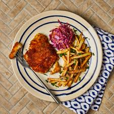
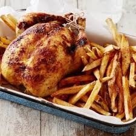
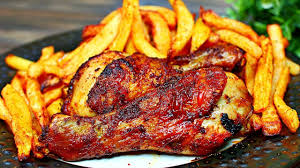

Crispy Fries




Ingredients
- 4 large potatoes
- 2–3 cups vegetable oil (for frying)
- 1 tsp salt (to taste)
- 1 tsp paprika or chili powder (optional)
- Ketchup or mayo for dipping
Steps
- Peel and cut potatoes into thin sticks.
- Soak the cut potatoes in cold water for 30 minutes (removes excess starch).
- Drain and pat dry with a clean towel.
- Heat oil in a deep pan. Fry potatoes in batches until golden (about 4–5 mins per batch).
- Remove and drain on paper towels. Sprinkle with salt and paprika while hot.
- Serve warm with ketchup or your favorite sauce. 🍟